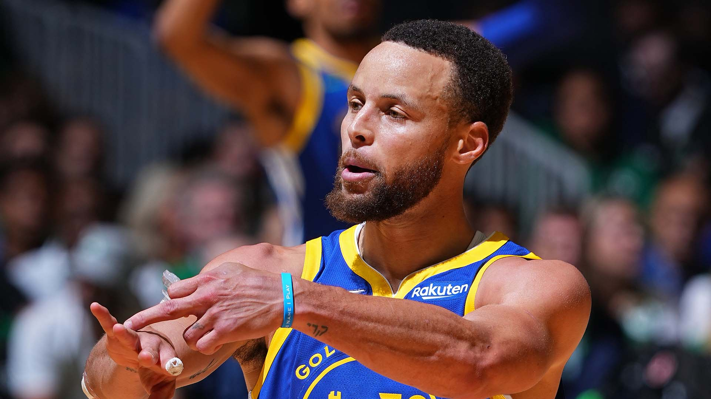

What makes a Basketball Player "Great"?
Greatness in basketball is an elusive and multifaceted concept, encompassing a blend of skills, leadership qualities, work ethic, adaptability, and a relentless pursuit of excellence. The annals of basketball history are adorned with the names of legendary players who transcended the sport, leaving an indelible mark on its narrative. This essay delves into the nuanced dimensions of greatness in basketball, exploring the qualities that distinguish the truly great players and examining how these attributes have shaped the history of the game.
Skill Mastery
At the heart of greatness in basketball lies an unparalleled mastery of the game's fundamental skills. Whether it's shooting accuracy, ball-handling, passing, or defensive prowess, great players exhibit an extraordinary level of proficiency that sets them apart. The ability to seamlessly execute these skills under pressure, in various game situations, is a hallmark of greatness.
Shooting Prowess
Great players are marked by their scoring ability, often demonstrated through exceptional shooting accuracy. Whether it's the deadly three-point shot, mid-range jumpers, or acrobatic finishes at the rim, the capability to score efficiently from different areas of the court distinguishes the greats.
Ball-Handling Skills
A great player must possess superior ball-handling skills, allowing them to navigate through defenses, create scoring opportunities, and maintain control in high-pressure situations. The dribble becomes an extension of the player's creativity, enabling them to dictate the flow of the game.
Passing Mastery
Great players are not only adept at scoring but also excel in facilitating scoring opportunities for their teammates. Precision passing, court vision, and an understanding of the game's dynamics enable these players to elevate the performance of the entire team.
Defensive Excellence
While scoring often garners the spotlight, great players understand the importance of defense. Whether it's stealing the ball, blocking shots, or simply being a lockdown defender, the defensive prowess of a player contributes significantly to their overall greatness.
Historical Examples
Michael Jordan, often hailed as the greatest basketball player of all time, showcased an unparalleled mastery of fundamental skills. His scoring ability, highlighted by his iconic mid-range jump shot and acrobatic dunks, along with defensive excellence, solidified his status as a basketball legend.
Magic Johnson, a point guard with extraordinary court vision and passing skills, revolutionized the game with his ability to orchestrate plays. His versatility and basketball IQ made him a quintessential example of skill mastery.
Leadership
Greatness in basketball extends beyond individual accomplishments; it encompasses leadership both on and off the court. The ability to inspire teammates, make crucial decisions under pressure, and set an example for others distinguishes a player's impact on the team and the sport as a whole.
Lead by Example
Great players lead by example, demonstrating the work ethic, dedication, and intensity required to succeed at the highest level. Their commitment to excellence becomes a standard for teammates to emulate.
Motivational Skills
Whether through pep talks, actions on the court, or sheer determination, great players have the ability to motivate their teammates. They instill a winning mindset, fostering a culture of resilience and determination.
Crucial Decision-Making Skills
In high-stakes situations, great players rise to the occasion, making critical decisions that can sway the outcome of a game. Their ability to stay composed and make the right choices under pressure is a testament to their leadership.
Teammate Empowerment
Great players understand the value of teamwork and actively empower their teammates. They recognize and utilize the strengths of each team member, creating a synergistic environment where the whole is greater than the sum of its parts.
Historical Examples
Tim Duncan, the stoic power forward for the San Antonio Spurs, was renowned for his quiet leadership and lead-by-example mentality. His unselfish play, defensive prowess, and fundamental skills set the tone for the Spurs' success.
Bill Russell, a dominant center for the Boston Celtics in the 1950s and 1960s, was a consummate leader. His focus on team success over individual accolades and his ability to inspire teammates contributed to an unprecedented 11 NBA championships.
Work Ethic
Behind every great player is a relentless work ethic—a commitment to continuous improvement, conditioning, and skill refinement. The pursuit of greatness demands countless hours in the gym, a dedication to physical fitness, and a constant drive to hone one's craft.
Practice Intensity
Great players approach practice with the same intensity they bring to actual games. They use practice sessions to refine their skills, experiment with new techniques, and simulate game scenarios to enhance their decision-making.
Physical Conditioning
The demands of professional basketball require peak physical condition. Great players invest in their fitness, ensuring they have the endurance, strength, and agility to perform at an elite level throughout the rigors of a season.
Skill Refinement
Even after achieving a high level of proficiency, great players continue to refine their skills. They are never satisfied with the status quo and are always seeking ways to add new dimensions to their game.
Mental Toughness
The pursuit of greatness involves overcoming adversity, both on and off the court. Great players exhibit mental toughness, resilience in the face of challenges, and an unwavering focus on their goals.
Historical Examples
Kobe Bryant, known for his legendary work ethic, was often the first to arrive at the gym and the last to leave. His dedication to improving his skills, even when at the peak of his career, became a defining characteristic of his greatness.
Hakeem Olajuwon, a Hall of Fame center, attributed his success to a tireless work ethic. His commitment to conditioning, footwork drills, and skill development allowed him to dominate both ends of the court.
Adaptability
Basketball is a dynamic and ever-evolving sport, and great players showcase the ability to adapt to changing trends, defensive strategies, and playing styles. Whether adjusting their own game or leading their teams through transitions, adaptability is a hallmark of greatness.
Evolution of Play Style
Great players adapt their playing style to the changing landscape of the game. This may involve adding new skills to their repertoire, altering their role on the team, or adjusting their approach to scoring.
Understanding Trends
The greats have an acute awareness of basketball trends, from offensive strategies to defensive schemes. They study the game, recognize emerging patterns, and adapt their game to exploit weaknesses in opponents.
Leadership in Transition
During periods of change, such as roster adjustments or coaching changes, great players provide stability and leadership. Their adaptability allows them to seamlessly integrate new teammates and adjust to different systems.
Versatility
Great players often possess a versatile skill set, allowing them to contribute in multiple facets of the game. This versatility enables them to adapt to various roles, whether as a primary scorer, playmaker, or defensive anchor.
Historical Examples
LeBron James, a contemporary basketball icon, has exemplified adaptability throughout his career. From transitioning between different teams to evolving his playing style over time, LeBron's ability to adapt has contributed to his sustained success.
Larry Bird, a Hall of Famer from the 1980s, showcased versatility by excelling in scoring, rebounding, and playmaking. His ability to adapt to different game situations and roles contributed to the Boston Celtics' success.
Clutch Performances
Greatness in basketball is often defined by the ability to deliver in crucial moments. Whether hitting a game-winning shot, making a defensive stop, or executing under pressure, clutch performances create enduring memories and solidify a player's legacy.
Buzzer-Beaters
Making a shot as time expires is the epitome of a clutch performance. Great players relish these moments, displaying composure and skill to secure victory for their team.
Game-Saving Plays
Whether it's a critical block, steal, or defensive stop, great players rise to the occasion defensively in moments that can alter the course of a game.
Free Throw Accuracy
In high-pressure situations, such as the closing moments of a close game, great players demonstrate consistency from the free-throw line. Making crucial free throws can be the difference between victory and defeat.
Leadership in Overtime
Overtime periods magnify the importance of each possession. Great players thrive in these situations, taking control and making the plays necessary to secure the win.
Historical Examples
Michael Jordan's numerous game-winning shots, including "The Shot" against the Cleveland Cavaliers in the 1989 playoffs, exemplify his clutch performances. Jordan's ability to rise to the occasion in crucial moments solidified his reputation as a clutch player.
Kawhi Leonard's game-winning shot in Game 7 of the 2019 Eastern Conference Semifinals, bouncing on the rim before dropping, is a recent example of clutch performance. Leonard's ability to deliver in high-pressure situations contributed significantly to the Toronto Raptors' championship run
Conclusion
Greatness in basketball is an intricate tapestry woven from a combination of skill mastery, leadership qualities, work ethic, adaptability, and clutch performances. The iconic players etched into the history of the sport have not only left an indelible mark on the court but have also transcended the game, becoming cultural icons and inspirations to aspiring athletes worldwide.
The pursuit of greatness is not a static endeavor; it evolves with each generation, influenced by changes in playing styles, rules, and the competitive landscape. As fans continue to witness the emergence of new basketball luminaries, the essence of greatness remains timeless—an amalgamation of talent, leadership, and a relentless commitment to excellence. The dynamic interplay of these qualities is what elevates certain players to the pantheon of basketball legends, ensuring their impact resonates far beyond the hardwood courts where their greatness was forged.